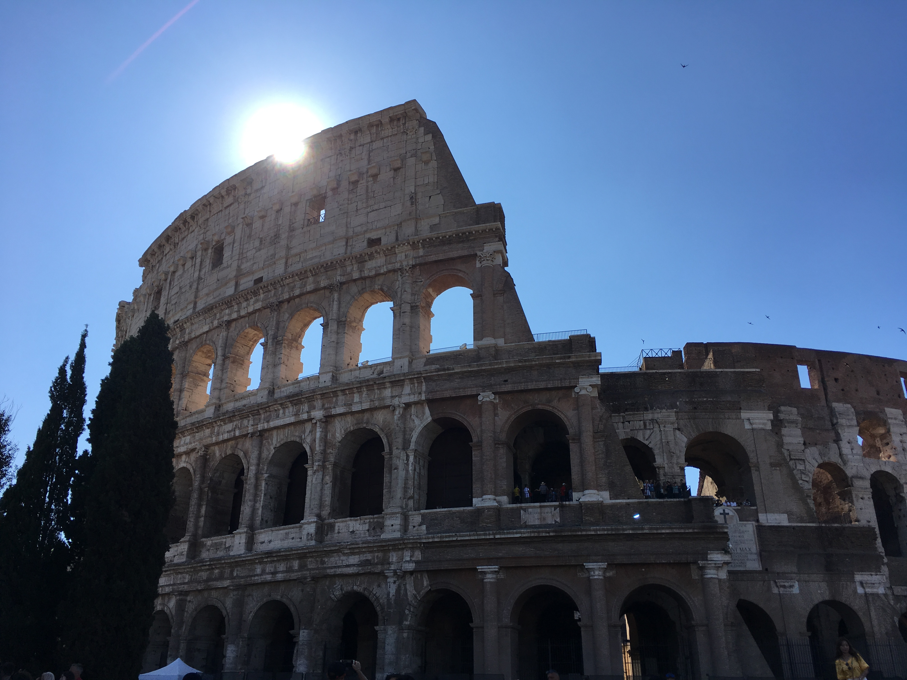
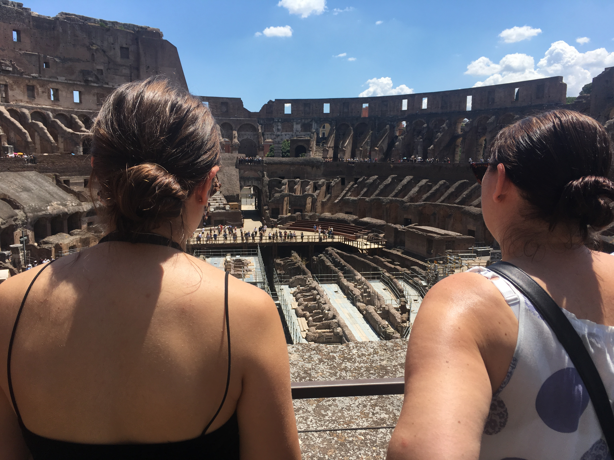
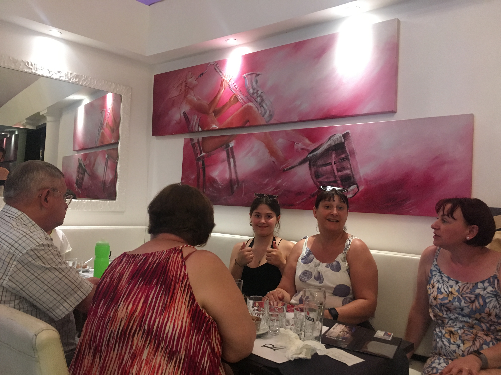
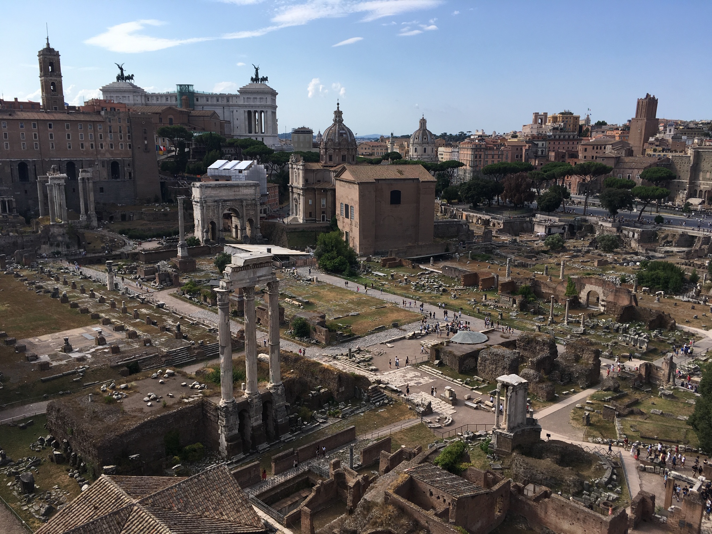

We didn’t get out for 8 on Sunday because C and I went on a fruitless search for a bread shop. I thought I might do it at 7, but the day before caught up with me and I was asleep.
It doesn’t seem to be part of the culture round these parts, but having a pastry standing at a bar with an espresso does.
We headed back to the supermarket, but that was shut as well, so we just ate what we had in; bananas, a noggin of bread and Jake’s biscuits.
I came out of the kitchen without glasses on and saw Chris wearing a crop top with a black bra. Hopefully his T shirt will appear in one of the phots and explain my confusion.
As N&P came out of our door while I filmed, Papy was complaining he didn’t look right in the hat Nanny had made him wear. “IT’S FINE! THAT’S WHEN YOU LOOK LIKE A TWAT IN A HAT” said Nanny, pointing at me.
We found a stand up pastry bar on the way to the colosseum that does take aways, so maybe that’s tomorrow sorted out.
We got to the Colosseum at about 9, and the queue was an hour long. It turned out, part way through the day, that we probably shouldn’t have gone to the same kiosk as last night, we should have got in the go straight in queue. None of it was signed, obviously.
We wanted to come back about 4, but we got the time slot of midday, no choice, that’s your lot. Nanny brought us breakfast while we were in the queue - croissants from Carrefour.
So, we had two hours to kill. Not enough to do the Forum and Paletine that are also included. I went home for the guidebook and a poo. I’d only managed two before heading out, due to the lack of breakfast.
Everyone else tried to go for a coffee, but it proved too complicated or expensive, so they went back to Carrefour, round the corner. They scored an unexpecably reasonable lunch table though.
We got turned away at 11:50 because it had taken so long to buy our tickets they said 12:10 by the time they printed out.
10 more minutes in the shade of the colosseum refusing to buy personal tours or cold water. C shouted at a man for saying ‘bullshit’ to Chesk. For fuck’s sake. She’s used to much worse. Still, it passed the time.
Then we were in. And its colossal. I’m glad I’m not a bear, lion, elephant or christian.
We all split up, so if anyone did anything amusing, I missed it.
At the lunch restaurant, they were full, so the waiter told his friend to take us to his place that was the same price. It wasn’t, but it was close enough and still looked out at the colosseum. More than yesterday, but, the artwork made up for it.
Jake and Papy claimed the artistry was very good. I tried to picture a room it would look good in. The debtor’s prison?
I didn’t go for the set menu, so my pizza arived on a pallet. My beer was 10cl bigger than advertised though. And it was an IPA.
Since we were here and had the tickets we went to the forum, today. Nanny made it as far as the entrance and declared she could go no further, so spent the next two hours nebbing on the man selling the wooden frogs with bumpy backs that make a noise. He was selling them for £20. The cheapest he sold one for was £4. Sorry, the Euro key isn’t working, but it’s practically 1:1. Thanks Nigel Farrage, N&P and Tommy Robinson.
The Forum was most ancient. Jake, Chesk and I found Bill and Ted up the top end, where we also found a water fountain so quiet we could have a water fight.
Once we found everyone else, they’d had enough and all except Chris, Chesk, Jake and I headed back to get Nanny and put her on a tram. They had been cancelled so they all had to get a taxi. The best £10 C has ever spent.
The remaining four headed up to the Palatine hill. The best bit was the view over the Forum.
Then we came back through the peaceful park full of ruins I’d come through after my poo stop. It was full of litter and heaving with people playing music, volleyball and, least likely of all, cricket.
We tried to buy transit tickets for tomorrow, but the Metro station was closed.
Back at the house it was PB lunch for tea. Lemoncillo and cricket World Cup for afters for Chris and Papy. I ignored the cricket and stuck to the lemoncillo.
I just got on the roof, saw a mozzie and Freya ran inside, having been the major victim yesterday.
That just leaves us Dores. The sun has set and It smells warm, humid and like holidays.